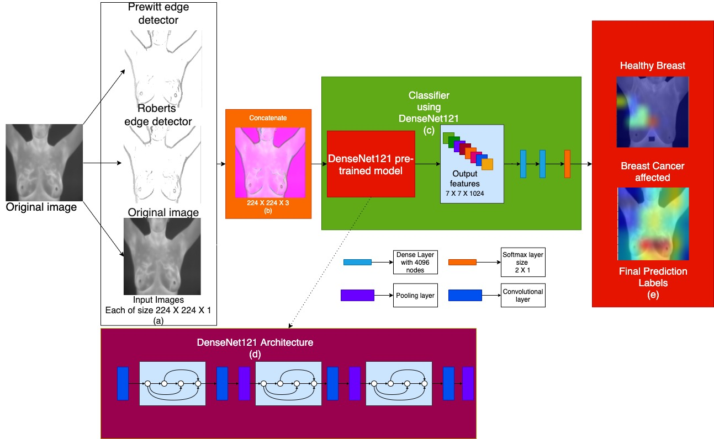
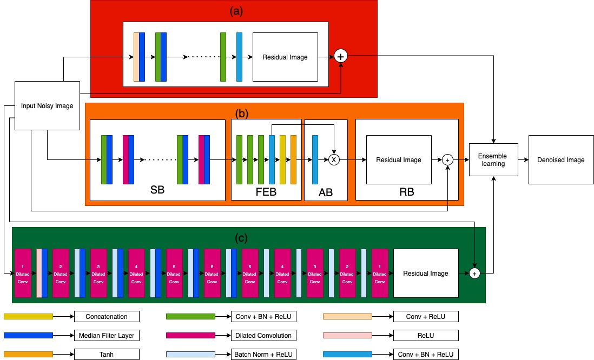
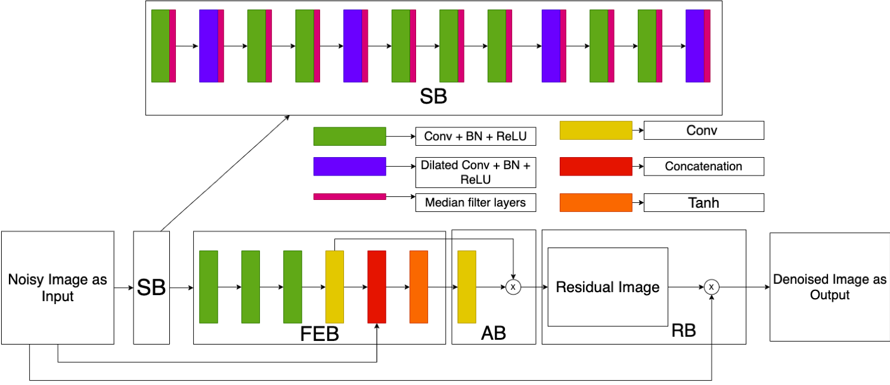

I am a final year student pursuing my bachelors in Electrical Engineering at Jadavpur University. I am currently doing my undergraduate research under the guidance of Prof. Ram Sarkar at the CMATER lab. My research interests lie at the intersection of Computer Vision and Geometric Deep Learning with a particular focus on their applications in Virtual reality and Augmented reality systems.
I love doing research in challenging fields, I have worked on various image classification models using fuzzy integral methods, optimizers and Graph Neural Networks.
I am looking to pursue Master of Science in Computer Science Engineering specializing in Computer Vision and Computer graphics in the future.

We propose a computer aided breast cancer detection system that accepts thermal breast images to detect the same. Here, we use the pre-trained DenseNet121 model as a feature extractor to build a classifier for the said purpose. Before extracting features, we work on the original thermal breast images to get outputs using two edge detectors - Prewitt and Roberts. These two edge-maps along with the original image make the input to the DenseNet121 model as a 3-channel image. The thermal breast image dataset namely, Database for Mastology Research (DMR-IR) is used to evaluate performance of our model.
In this work, a classifier ensemble technique is proposed, utilizing Choquet fuzzy integral, wherein convolutional neural network (CNN) based models are used as base classifiers. We use the transfer learning scheme to train the base classifiers, which are InceptionV3, DenseNet121, and VGG19. We utilize the pre-trained CNN models to extract features and classify the chest X-ray images using two dense layers and one softmax layer. After that, we combine the prediction scores of the data from individual models using Choquet fuzzy integral to get the final predicted labels, which is more accurate than the prediction by the individual models. To determine the fuzzy-membership values of each classifier for the application of Choquet fuzzy integral, we use the validation accuracy of each classifier.

We propose an ensemble learning model which uses the output of three image denoising models namely, ADNet, DnCNN, and IRCNN in the ratio of 2:3:6 respectively. The first model (ADNet) consists of Convolutional Neural Networks with attention along with median filter layers after every convolutional layer and a dilation rate of 8. In case of the second model, it is a feed forward denoising CNN or DnCNN with median filter layers after half of the Convolutional layers. For the third model which is Deep CNN Denoiser Prior or IRCNN, the model contains dilated convolutional layers and median filter layers up to the dilated convolutional layers with a dilation rate of 6. By quantitative analysis, we note that our model performs significantly well when tested on the BSD500 and Set12 datasets

In this work we use the attention-guided CNN model as the base model. Attention-guided CNN model consists of 4 sections the SB or Sparse Block, the FEB or Feature Enhancement Block, the AB or Attention Block and the RB or Reconstruction Block. In the Sparse Block section we add median filter layers after every convolutional or dilated convolutional block. We also increase the dilation rate of the dilated convolutional layers from 2 as proposed in the original paper to 8.